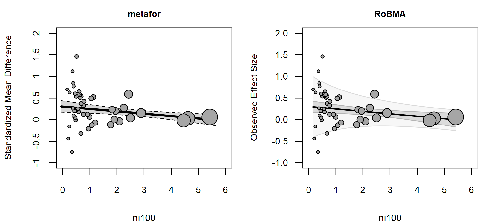
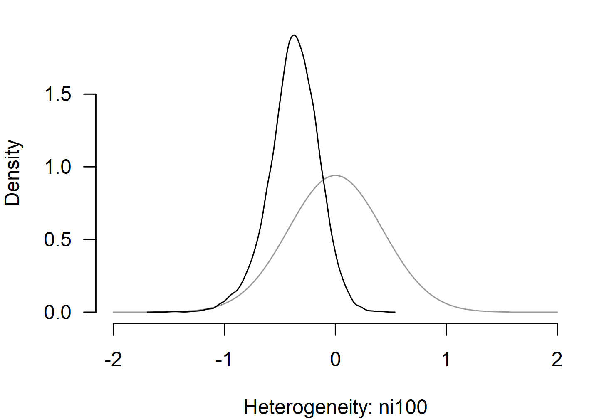

Location-Scale Meta-Analysis
František Bartoš
28th of April 2026
Source:vignettes/v12-metafor-parity-location-scale.Rmd
v12-metafor-parity-location-scale.RmdThis vignette illustrates how to fit location-scale meta-analytic
models with the RoBMA R package (Bartoš & Maier, 2020). We walk through
the writing-to-learn dataset (dat.bangertdrowns2004 in the
metadat package), showing the brma() call with
the scale = ~ ... argument alongside its
metafor::rma() counterpart (Viechtbauer, 2010), and build from a
simple random-effects model up to a model with different predictors in
the location and scale parts.
A location-scale model parameterizes the between-study heterogeneity as a regression on study-level covariates, allowing to vary across subgroups or as a function of continuous moderators. The location side is the usual meta-regression on the effect.
All brma() calls keep the default prior distributions;
see the Prior
Distributions vignette for the prior definitions and
customization options. For the non-location-scale workflow showing more
features (also applicable to location-scale models) see the Bayesian
Meta-Analysis vignette.
Random-Effects Model
The writing-to-learn dataset contains 48 standardized mean
differences from studies on the effectiveness of school-based writing
interventions on academic achievement. Effect sizes yi and
sampling variances vi are already provided.
data("dat.bangertdrowns2004", package = "metadat")
dat <- dat.bangertdrowns2004
dat$ni100 <- dat$ni / 100
dat$meta <- as.factor(dat$meta)
dat$imag <- as.factor(dat$imag)We start from a standard random-effects model with no scale predictor.
fit1_metafor <- metafor::rma(yi, vi, data = dat)
fit1_metafor
#>
#> Random-Effects Model (k = 48; tau^2 estimator: REML)
#>
#> tau^2 (estimated amount of total heterogeneity): 0.0499 (SE = 0.0197)
#> tau (square root of estimated tau^2 value): 0.2235
#> I^2 (total heterogeneity / total variability): 58.37%
#> H^2 (total variability / sampling variability): 2.40
#>
#> Test for Heterogeneity:
#> Q(df = 47) = 107.1061, p-val < .0001
#>
#> Model Results:
#>
#> estimate se zval pval ci.lb ci.ub
#> 0.2219 0.0460 4.8209 <.0001 0.1317 0.3122 ***
#>
#> ---
#> Signif. codes: 0 '***' 0.001 '**' 0.01 '*' 0.05 '.' 0.1 ' ' 1
fit1_brma <- brma(
yi = yi, vi = vi, measure = "SMD",
data = dat, seed = 1
)
summary(fit1_brma, include_mcmc_diagnostics = FALSE)
#>
#> Bayesian Random-Effects Model (k = 48)
#>
#> Estimates
#> Mean SD 0.025 0.5 0.975
#> mu 0.220 0.048 0.130 0.220 0.317
#> tau 0.227 0.053 0.131 0.224 0.340The pooled effect and the single heterogeneity parameter
tau track the REML estimates from the metafor
package.
Adding a Scale Predictor
Sample size is a natural candidate for explaining heterogeneity:
smaller studies often produce more variable estimates than larger ones.
We add the rescaled total sample size (ni100 = ni / 100) on
both the location and the scale side.
fit2_metafor <- suppressWarnings(metafor::rma(
yi, vi,
mods = ~ ni100,
scale = ~ ni100,
data = dat
))
fit2_metafor
#>
#> Location-Scale Model (k = 48; tau^2 estimator: REML)
#>
#> Test for Residual Heterogeneity:
#> QE(df = 46) = 95.1352, p-val < .0001
#>
#> Test of Location Coefficients (coefficient 2):
#> QM(df = 1) = 7.8268, p-val = 0.0051
#>
#> Model Results (Location):
#>
#> estimate se zval pval ci.lb ci.ub
#> intrcpt 0.3017 0.0661 4.5629 <.0001 0.1721 0.4313 ***
#> ni100 -0.0553 0.0198 -2.7976 0.0051 -0.0940 -0.0165 **
#>
#> Test of Scale Coefficients (coefficient 2):
#> QM(df = 1) = 3.1850, p-val = 0.0743
#>
#> Model Results (Scale):
#>
#> estimate se zval pval ci.lb ci.ub
#> intrcpt -1.9209 0.6690 -2.8713 0.0041 -3.2321 -0.6097 **
#> ni100 -0.9174 0.5141 -1.7847 0.0743 -1.9250 0.0901 .
#>
#> ---
#> Signif. codes: 0 '***' 0.001 '**' 0.01 '*' 0.05 '.' 0.1 ' ' 1
fit2_brma <- brma(
yi = yi, vi = vi, measure = "SMD",
mods = ~ ni100,
scale = ~ ni100,
data = dat, seed = 1
)
summary(fit2_brma, include_mcmc_diagnostics = FALSE)
#>
#> Bayesian Location-Scale Model (k = 48)
#>
#> Location
#> Mean SD 0.025 0.5 0.975
#> intercept 0.303 0.068 0.171 0.302 0.437
#> ni100 -0.056 0.023 -0.103 -0.056 -0.013
#>
#> Scale
#> Mean SD 0.025 0.5 0.975
#> exp(intercept) 0.348 0.118 0.148 0.338 0.608
#> ni100 -0.375 0.225 -0.865 -0.366 0.042
#> exp(Intercept) corresponds to the between-study heterogeneity tau; the meta-regression coefficients correspond to the multiplicative effects on log-scale.The location coefficient on ni100 matches the REML
estimate from the metafor package. The scale block reports
exp(intercept), which is the baseline between-study
heterogeneity
,
and a multiplicative log-scale coefficient on ni100. Note
that metafor::rma() regresses
while brma() regresses
,
so each metafor package scale coefficient is exactly twice
the matching brma() coefficient.
regplot() with pi = TRUE overlays the
prediction interval on the bubble plot. Because
varies with ni100, the brma() prediction band
narrows toward larger sample sizes, where the model expects less
between-study heterogeneity. metafor::regplot() does not
currently draw a prediction interval for location-scale models, so only
the regression line and confidence band appear in the left panel.
par(mfrow = c(1, 2), mar = c(4, 4, 2, 1), cex.axis = 0.8, cex.lab = 0.8, cex.main = 0.75)
metafor::regplot(fit2_metafor, mod = "ni100", pi = TRUE,
main = "metafor", xlim = c(0, 6), ylim = c(-1, 2))
regplot(fit2_brma, mod = "ni100", pi = TRUE,
main = "RoBMA", xlim = c(0, 6), ylim = c(-1, 2))
Different Variables in Location and Scale
Variables in the location and scale parts can differ. The next fit
adds metacognitive reflection (meta) on the location side
and imaginative-component coding (imag) on the scale
side.
fit3_metafor <- suppressWarnings(metafor::rma(
yi, vi,
mods = ~ ni100 + meta,
scale = ~ ni100 + imag,
data = dat
))
fit3_metafor
#>
#> Location-Scale Model (k = 46; tau^2 estimator: REML)
#>
#> Test for Residual Heterogeneity:
#> QE(df = 43) = 82.2711, p-val = 0.0003
#>
#> Test of Location Coefficients (coefficients 2:3):
#> QM(df = 2) = 12.4826, p-val = 0.0019
#>
#> Model Results (Location):
#>
#> estimate se zval pval ci.lb ci.ub
#> intrcpt 0.2303 0.0655 3.5166 0.0004 0.1019 0.3586 ***
#> ni100 -0.0565 0.0188 -3.0113 0.0026 -0.0933 -0.0197 **
#> meta1 0.1469 0.0690 2.1305 0.0331 0.0118 0.2820 *
#>
#> Test of Scale Coefficients (coefficients 2:3):
#> QM(df = 2) = 5.0289, p-val = 0.0809
#>
#> Model Results (Scale):
#>
#> estimate se zval pval ci.lb ci.ub
#> intrcpt -2.3456 0.8354 -2.8079 0.0050 -3.9829 -0.7084 **
#> ni100 -0.9995 0.6087 -1.6421 0.1006 -2.1925 0.1935
#> imag1 2.1258 1.1857 1.7929 0.0730 -0.1981 4.4497 .
#>
#> ---
#> Signif. codes: 0 '***' 0.001 '**' 0.01 '*' 0.05 '.' 0.1 ' ' 1
fit3_brma <- brma(
yi = yi, vi = vi, measure = "SMD",
mods = ~ ni100 + meta,
scale = ~ ni100 + imag,
data = dat, seed = 1
)
summary(fit3_brma, include_mcmc_diagnostics = FALSE)
#>
#> Bayesian Location-Scale Model (k = 46)
#>
#> Location
#> Mean SD 0.025 0.5 0.975
#> intercept 0.229 0.069 0.095 0.228 0.369
#> ni100 -0.058 0.023 -0.106 -0.058 -0.016
#> meta[1] 0.173 0.078 0.026 0.171 0.336
#>
#> Scale
#> Mean SD 0.025 0.5 0.975
#> exp(intercept) 0.291 0.113 0.100 0.281 0.542
#> ni100 -0.338 0.237 -0.826 -0.333 0.108
#> imag[1] 0.361 0.447 -0.600 0.383 1.180
#> exp(Intercept) corresponds to the between-study heterogeneity tau; the meta-regression coefficients correspond to the multiplicative effects on log-scale.Each scale coefficient is again roughly half of its
metafor package counterpart, with brma()
shrinking the larger metafor package estimates more
strongly because of the weakly informative default prior
distribution.
Scale Predictor Prior Distributions
Scale regression coefficients are not on the effect-size scale: they
describe multiplicative changes in
on the log scale and are therefore scale-free. The default prior
distribution is Normal(0, 0.5), which corresponds to a
weakly informative prior distribution on the multiplicative effect. A
coefficient of
corresponds to roughly
or
,
i.e., a
decrease or
increase in
per unit change in the predictor; values past
correspond to a halving or doubling, which the prior distribution treats
as extreme.
plot() with prior = TRUE overlays the prior
distribution on the posterior so the shift is visible.
parameter_scale = "ni100" selects the scale-side
coefficient (the analogous selector on the location side is
parameter_mods = "ni100").

Other Inference Helpers
All inference helpers available for any other brma() fit
work the same way for the location-scale fit specified via
scale = ~ .... This includes meta-regression bubble plots,
marginal means, model comparison via Bayes factors, multilevel
structures via cluster, and the full set of model-fit
diagnostics. See the Bayesian
Meta-Analysis vignette for more details.